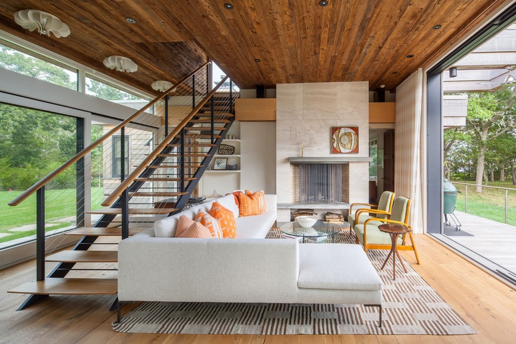

Interiors inseparable from the architecture.
The quality of a room is determined by its proportions and light — not the furniture placed within it.
The full material environment.
Interior design at Auerbach Architecture typically includes finish schedules (floors, walls, ceilings, trim, paint), material specifications (stone, tile, wood species, hardware), lighting design, kitchen and bath layout and specification, built-in elements including bookshelves, window seats, mudrooms, and storage, and furniture coordination either as a full service or in collaboration with a furniture designer of the client's choosing.
We specify interior finishes with the same attention to breathability and longevity we bring to the building envelope. Lime plaster walls. Stone and hardwood floors. Linseed or natural oil-finished millwork.
About interior design services.
Is interior design included in your architecture fee?
Material and finish specifications, lighting, and built elements are included in our standard architecture services. Full furniture and furnishings curation can be scoped as an additional service depending on the project.
Can you work with an interior designer we have already hired?
Yes, and we enjoy it. We collaborate with interior designers regularly. The earlier in the process we can coordinate, the better the result — ideally from schematic design, so that structural, mechanical, and lighting elements are integrated from the start.
Do you have a recognizable interior style?
Not a signature style. We have strong material preferences and design principles, but our interiors are shaped by each project's site, program, and client. What they share is restraint, natural light, and a respect for the materials themselves.